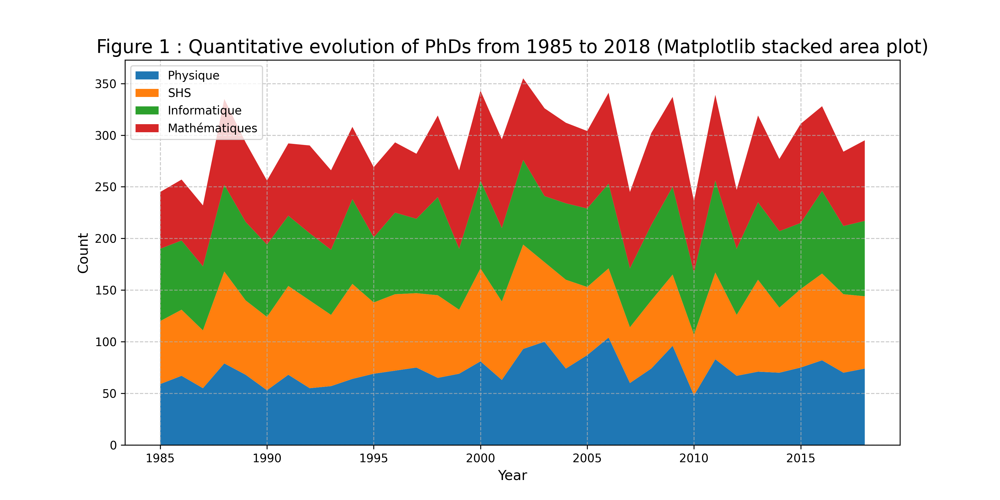
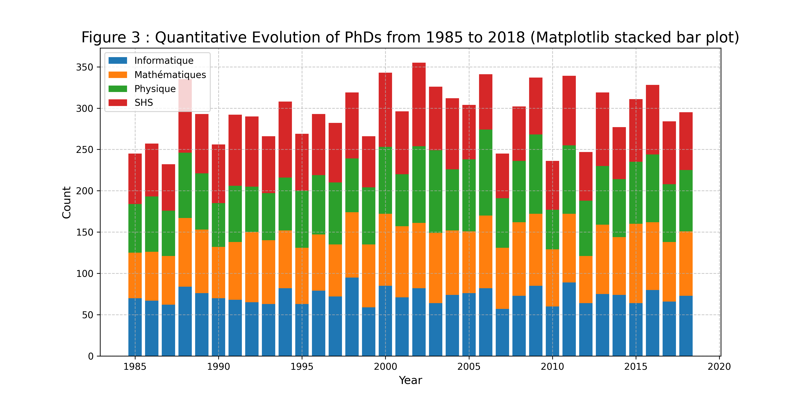
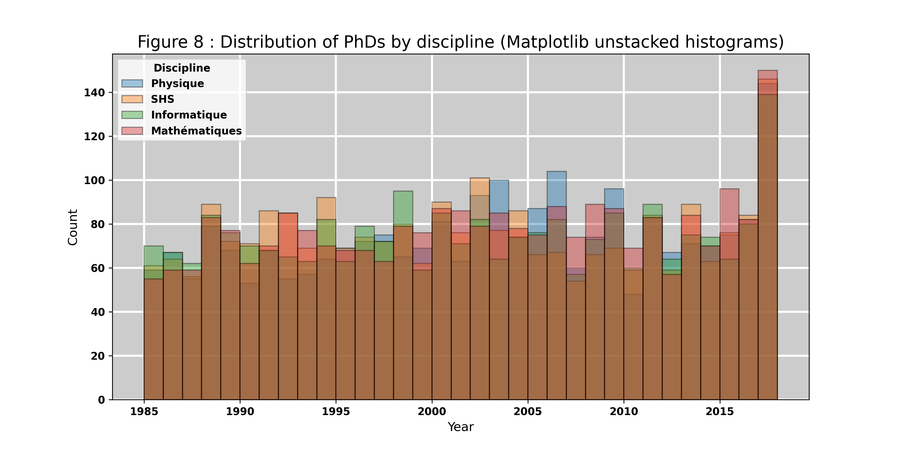
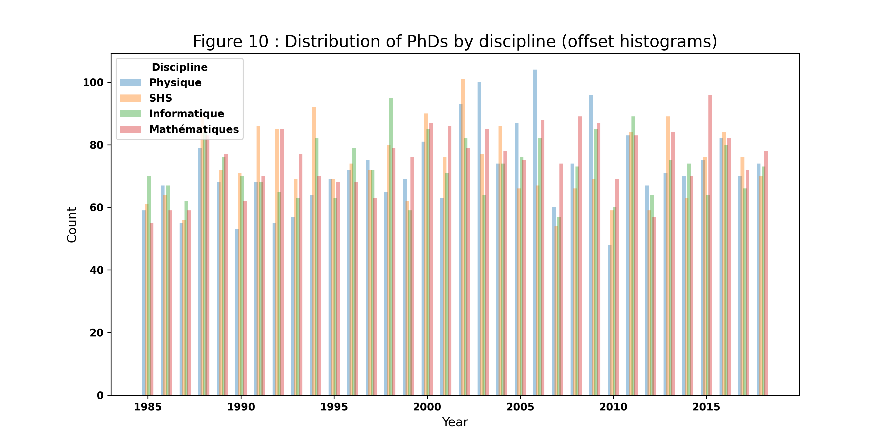
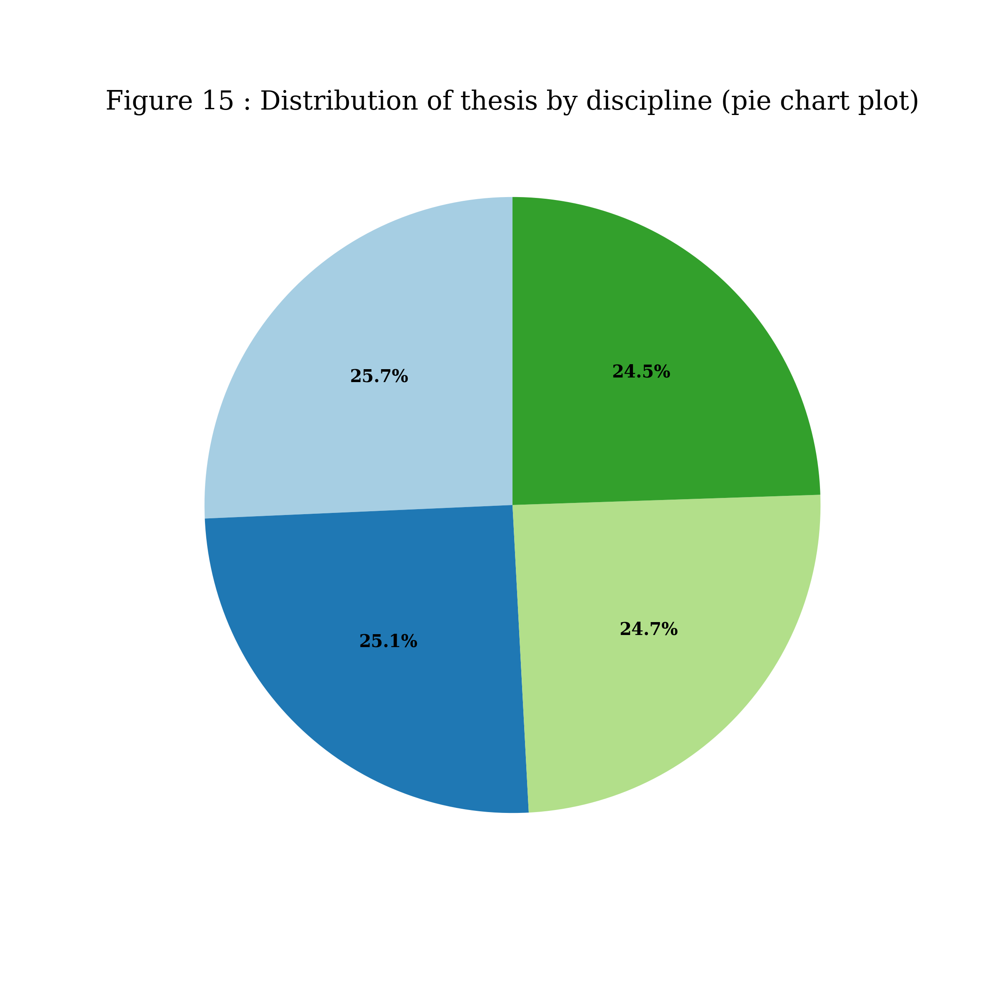
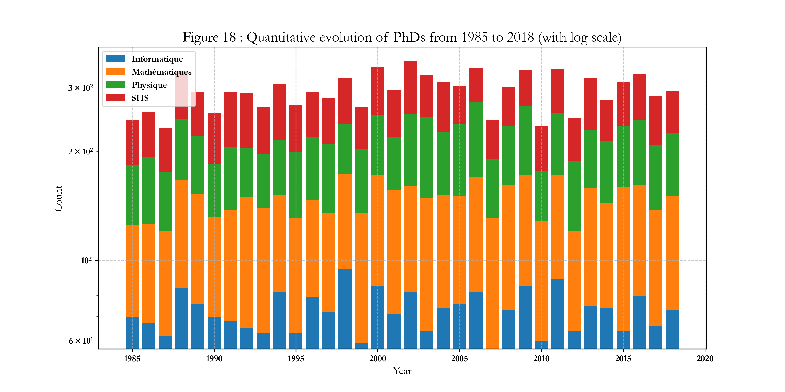

🇫🇷 Visualisations du projet
Cette page regroupe les graphiques générés dans les exercices de visualisation.
🇬🇧 Project Visualisations
This page displays the plots generated in visualisation exercises.

Figure 1 - Quantitative evolution of PHDs from 1985 to 2018 (Matplotlib stacked area plot)

Figure 2 - Quantitative evolution of PHDs from 1985 to 2018 (matplotlib stacked bar plot)

Figure 8 - Distribution of PHDs by discipline (matplotlib unstacked histogram)

Figure 10 - Distribution of PHDs by discipline (offset histogram)
.png) Figure 14 - Quantitative evolution of PHDs from 1985 to 2018 (line plot)
Figure 14 - Quantitative evolution of PHDs from 1985 to 2018 (line plot)

Figure 15 - Distribution of theses by discipline (pie chart)

Figure 18 - Quantitative evolution of PHDs from 1985 to 2018 (with log scale)
 Plotly Graphs (Interactive)
Plotly Graphs (Interactive)
Plotly Graphs (Interactive)